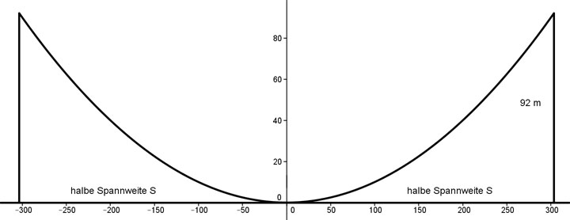

Aufgabe 139 Der Bogen einer Hängebrücke ist parabelförmig mit y = 0,001x2 und hat eine Höhe von 92 m. Wie groß ist ihre Spannweite S?  y = 0,001 * x2 Höhe für y eingesetzt: 92 = 0,001 * x2 |:0,001 x2 = 92 000 |√ x = ± 303,3 m Die Spannweite S = 2 * 303,3 m = 606,6 m.